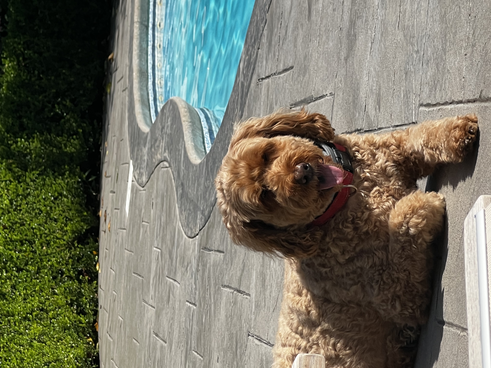
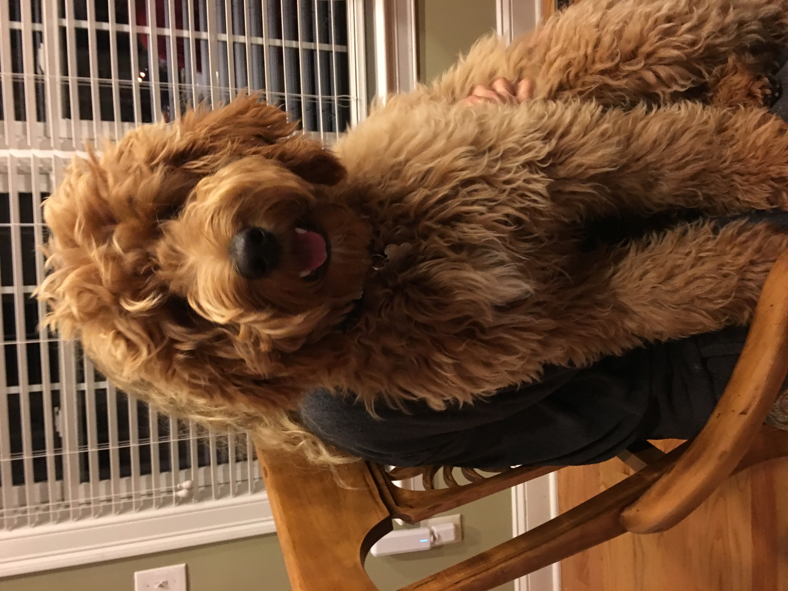
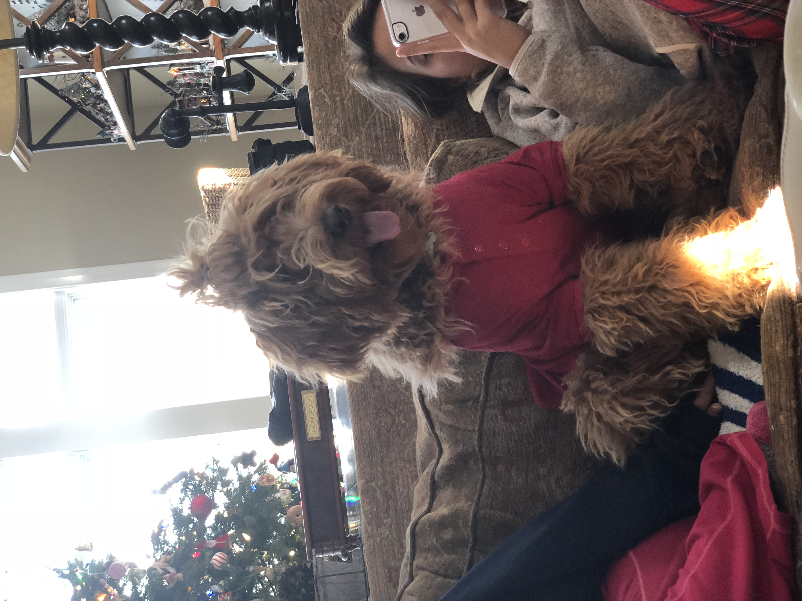
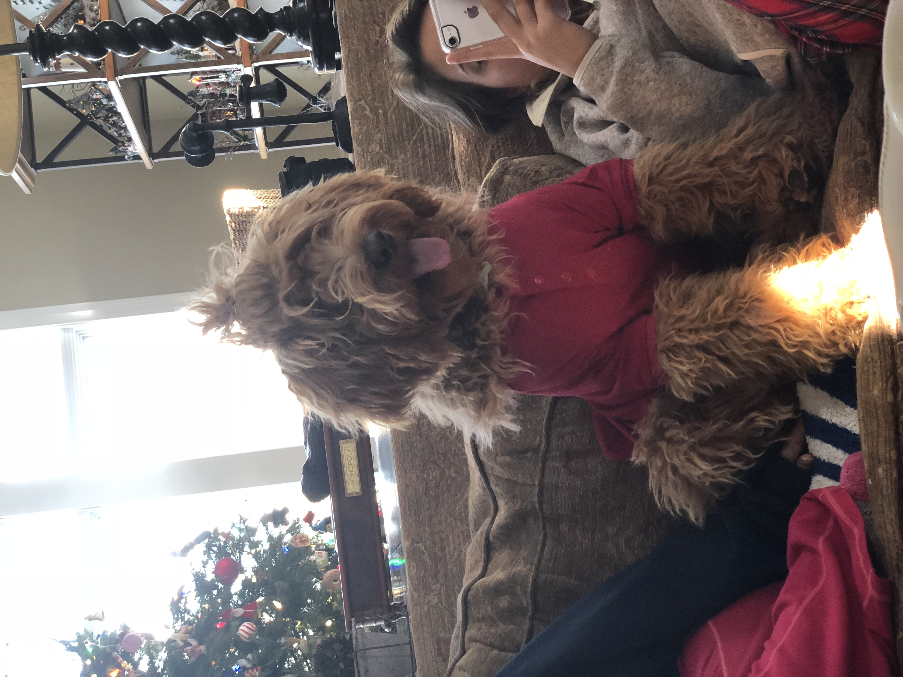

Honey
Honey, the vivacious Australian Labradoodle, recently celebrated her 5th birthday on October 25th. Her days are usually filled with the joys of endless walks and the pursuit of treats, a testimony to her zest for life. As she roams the streets of her neighborhood, her spirited demeanor captures the hearts of everyone she encounters. Every gentle wag of her tail seems to radiate a unique blend of enthusiasm and love, captivating all who are lucky enough to cross her path. At home, she loves nothing more than a comfy spot to rest, but she's always ready for more adventures or a loving scratch behind the ears, proving that happiness indeed comes in furry packages.
At the tender age of 5, Honey has also cultivated a personality that is both charming and discerning. She knows exactly how to use her puppy eyes to get an extra treat or two, a skill that leaves her human counterparts smiling in defeat. Her intuitive nature, a characteristic hallmark of her breed, means she has an uncanny ability to sense the moods and needs of her family members, always offering a comforting nudge or an affectionate lick at just the right moments. While her love for walks is unparalleled, Honey also enjoys the simpler pleasures in life, like lounging in sunny spots or enjoying a good belly rub. Her ability to find joy in the little things is a constant reminder to her family to cherish the beautiful moments that life offers.
Photo Gallery

 

Likes
- Her family
- Treats
- Walks
Bear

Bear is a lazy, food-loving dog that is sometimes playful. His favorite activity is lying in the sun on his side and lounging. He enjoys playing with his toys and loves to fetch them when you throw them, but eventually, he gets bored and just stops fetching them and lays down.
Bear is also scared of a lot of things. He doesn’t like water (showers and even rain) or getting his nails clipped, and he’s sometimes even so lazy that he’ll just stop walking and sit down until you turn around and go back home.
Photo Gallery


Likes
- Food
- Laying in bed
- Fetch
Cheeto (Chicken)

Cheeto is a cat who likes to eat a lot and play a lot. He has an obsession with his grandpa (human) and tries to get outside every single day. If he isn’t causing problems, he is usually hiding in a seven foot tall cat tree and sleeping.
Another name for Cheeto is Chicken, because sometimes he sits very scrunched up and ends up looking like a rotisserie chicken. He was nicknamed this by one of his friends, and now he understands it as his own name. He is about six years old and still acts like a younger cat, despite being middle-aged.
Photo Gallery


Likes
- Treats
- Exploring
- My Dad
Milktea

Milktea is a Scottish fold with a personality of a princess. She loves her veggies and refuses to eat anything dropped on the ground. She makes it clear when she has a demand of any sort by complaining in a loud, distinguished manner. If what she says could be translated, it probably would be, “This is atrocious, the water container has been empty for the 3rd time this week. I want to see the manager.”
Despite her cuteness and royalty, she actually suffers from a genetic disorder intentionally brought upon by humans. I highly advise against keeping a Scottish fold because they are in constant pain when they reach around 2 years old. Cartilage accumulates around her paw joints and tail joints and it becomes painful for them to even walk. She is living evidence of human’s cruelty of breeding animals to look pretty while sacrificing the animals’ health.
Photo Gallery


Likes
- She loves individual corn kernels served on human hands
- She enjoys sitting royally on suitcases to claim ownership of her humans
- She prefers to be alone and sit on soft surfaces in her free time
Jax

Jax is a kitten, about five months old that I found this summer at a gas station while traveling to Marquette, Michigan. He was scared and malnourished, crying in the parking lot. I took him with me and after some healthy meals and a trip to the vet he is doing great!
My roommates and I just recently moved and Jax has been having a hard time getting used to the large house since we were previously living in a small apartment. Jax is incredibly playful and loves to run around, but when he is sleepy he is happy to be held.
Photo Gallery


Likes
- Toys
- Going outside
- Attention